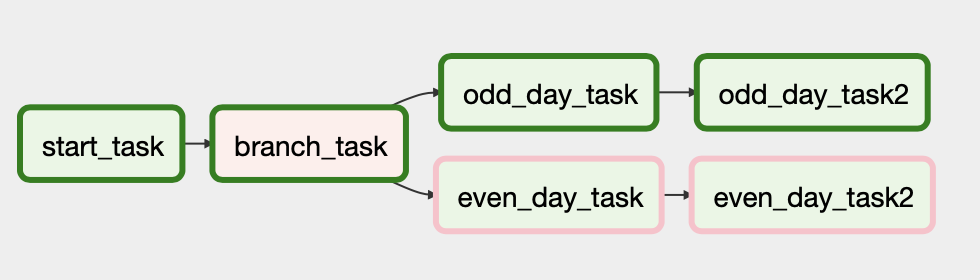

Datacamp Airflow Course
Summary
This post is about a Datacamp course on Airflow which I took recently. I share the course and personal notes. I will also share some of the code I wrote for the exercises. This course covers information about: (1) DAGs; (2) Web Interface; (3) Operator; (4) Task; (5) Scheduling; (6) Sensor; (7) Executor; (8) Debugging; (9) SL; (10) Template; (11) Macro; (12) Branching; and (13) Production.
The course is called Introduction to Airflow in Python and is part of the Data Engineering track.
Section 1: Introduction to Airflow
Apache Airflow is a platform to program workflows (general), including the creation, scheduling, and monitoring of said workflows. Airflow can use various tools and languages, but the actual workflow code is written with Python. Airflow implements workflows as DAGs, or Directed Acyclic Graphs. Airflow can be accessed and controlled via code, via the command-line, or via a built-in web interface.
What is a workflow?
Before we can really discuss Airflow, we need to talk about workflows. A workflow is a set of steps to accomplish a given data engineering task. These can include any given task, such as downloading a file, copying data, filtering information, writing to a database, and so forth. A workflow is of varying levels of complexity. Some workflows may only have 2 or 3 steps, while others consist of hundreds of components.

The complexity of a workflow is completely dependent on the needs of the user. We show an example of a possible workflow to the right. It’s important to note that we’re defining a workflow here in a general data engineering sense. This is an informal definition to introduce the concept. As you’ll see later, workflow can have specific meaning within specific tools.
What is Airflow?
Airflow is a platform to program workflows (general), including the creation, scheduling, and monitoring of said workflows.
Airflow can use various tools and languages, but the actual workflow code is written with Python. Airflow implements workflows as DAGs, or Directed Acyclic Graphs. We’ll discuss exactly what this means throughout this course, but for now think of it as a set of tasks and the dependencies between them. Airflow can be accessed and controlled via code, via the command-line, or via a built-in web interface. We’ll look at all these options later on.
Quick introduction to DAGs
A DAG stands for a Directed Acyclic Graph. In Airflow, this represents the set of tasks that make up your workflow. It consists of the tasks and the dependencies between tasks.

DAGs are created with various details about the DAG, including the name, start date, owner, email alerting options, etc.
DAG code example
We will go into further detail in the next lesson but a very simple DAG is defined using the following code. A new DAG is created with the dag_id of etl_pipeline and a default_args dictionary containing a start_date for the DAG.
Note that within any Python code, this is referred to via the variable identifier, etl_dag, but within the Airflow shell command, you must use the dag_id.
Running a workflow in Airflow
To get started, let’s look at how to run a component of an Airflow workflow. These components are called tasks and simply represent a portion of the workflow. We’ll go into further detail in later chapters. There are several ways to run a task, but one of the simplest is using the airflow run shell command.
Airflow run takes three arguments, a dag_id, a task_id, and a start_date. All of these arguments have specific meaning and will make more sense later in the course. For our example, we’ll use a dag_id of example-etl, a task named download-file, and a start date of 2020-01-10. This task would simply download a specific file, perhaps a daily update from a remote source. Our command as such is airflow run example-etl download-file 2020-01-10. This will then run the specified task within Airflow.
Exercises
We’ve looked at Airflow and some of the basic aspects of why you’d use it. We’ve also looked at how to run a task within Airflow from the command-line. Let’s practice what we’ve learned.
Exercise 1: Running a task in Airflow
You’ve just started looking at using Airflow within your company and would like to try to run a task within the Airflow platform. You remember that you can use the airflow run command to execute a specific task within a workflow.
Note that an error while using airflow run will return airflow.exceptions.AirflowException: on the last line of output.
An Airflow DAG is set up for you with a dag_id of etl_pipeline. The task_id is download_file and the start_date is 2020-01-08. All other components needed are defined for you.
Which command would you enter in the console to run the desired task?
- airflow run dag task 2020-01-08
- airflow run etl_pipeline task 2020-01-08
- airflow run etl_pipeline download_file 2020-01-08
Exercise 2: Examining Airflow commands
While researching how to use Airflow, you start to wonder about the airflow command in general. You realize that by simply running airflow you can get further information about various sub-commands that are available.
Which of the following is NOT an Airflow sub-command?
- list_dags
- edit_dag
- test
- scheduler
Section 2: Airflow DAGs
Our first question is what is a DAG? Beyond any specific mathematical meaning, a DAG, or Directed Acyclic Graph, has the following attributes:
It is Directed, meaning there is an inherent flow representing the dependencies or order between execution of components. These dependencies (even implicit ones) provide context to the tools on how to order the running of components.
A DAG is also Acyclic - it does not loop or repeat. This does not imply that the entire DAG cannot be rerun, only that the individual components are executed once per run.
In this case, a Graph represents the components and the relationships (or dependencies) between them.
The term DAG is found often in data engineering, not just in Airflow but also Apache Spark, Luigi, and others1.

DAG in Airflow
As we’re working with Airflow, let’s look at its implementation of the DAG concept. Within Airflow, DAGs are written in Python, but can use components written in other languages or technologies. This means we’ll define the DAG using Python, but we could include Bash scripts, other executables, Spark jobs, and so on. Airflow DAGs are made up of components to be executed, such as operators, sensors, etc. Airflow typically refers to these as tasks. We’ll cover these in much greater depth later on, but for now think of a task as a thing within the workflow that needs to be done. Airflow DAGs contain dependencies that are defined, either explicitly or implicitly. These dependencies define the execution order so Airflow knows which components should be run at what point within the workflow. For example, you would likely want to copy a file to a server prior to trying to import it to a database.
Define a DAG
Let’s look at defining a simple DAG within Airflow. When defining the DAG in Python, you must first import the DAG object from airflow dot models. Once imported, we create a default arguments dictionary consisting of attributes that will be applied to the components of our DAG. These attributes are optional, but provide a lot of power to define the runtime behavior of Airflow.
from airflow.models import DAG
from datetime import datetime
default_arguments = {
'owner' : 'jdoe',
'email' : 'jdoe@email.com',
'start_date' : datetime(2020, 1, 20)
}
etl_dag = DAG(
'etl_workflow',
default_args = default_arguments
)Here we define the owner name as jdoe, an email address for any alerting, and specify the start date of the DAG. The start date represents the earliest datetime that a DAG could be run. Finally, we define our DAG object with the first argument using a name for the DAG, etl underscore workflow, and assign the default arguments dictionary to the default underscore args argument. There are many other optional configurations we will use later on.
Note that the entire DAG is assigned to a variable called etl underscore dag. This will be used later when defining the components of the DAG, but the variable name etl underscore dag does not actually appear in the Airflow interfaces. Note, DAG is case sensitive in Python code.
DAGs on the command line
When working with DAGs (and Airflow in general), you’ll often want to use the airflow command line tool. The airflow command line program contains many subcommands that handle various aspects of running Airflow. You’ve used a couple of these already in previous exercises. Use the
command for help and descriptions of the subcommands. Many of these subcommands are related to DAGs. You can use the
option to see all recognized DAGs in an installation. When in doubt, try a few different commands to find the information you’re looking for.
Command line vs Python
You may be wondering when to use the Airflow command line tool vs writing Python.
| Command line | Python |
|---|---|
| Start Airflow processes | Create a DAGs |
| Manually run DAGs / tasks | Edit individual prop of DAG |
| Review logging information |
In general, the airflow command line program is used to start Airflow processes (ie, webserver or scheduler), manually run DAGs or tasks, and review logging information. Python code itself is usually used in the creation and editing of a DAG, not to mention the actual data processing code itself.
Exercises
Exercise 1: Defining a simple DAG
You’ve spent some time reviewing the Airflow components and are interested in testing out your own workflows. To start you decide to define the default arguments and create a DAG object for your workflow.
The DateTime object has been imported for you.
- Import the Airflow DAG object. Note that it is case-sensitive.
- Define the default_args dictionary with a key owner and a value of ‘dsmith’. Add a start_date of January 14, 2020 to default_args using the value 1 for the month of January. Add a retries count of 2 to default_args.
- Instantiate the DAG object to a variable called etl_dag with a DAG named example_etl. Add the default_args dictionary to the appropriate argument.
Exercise 2: Working with DAGs and the Airflow shell
While working with Airflow, sometimes it can be tricky to remember what DAGs are defined and what they do. You want to gain some further knowledge of the Airflow shell command so you’d like to see what options are available.
Multiple DAGs are already defined for you. How many DAGs are present in the Airflow system from the command-line?
Section 3: Airflow web interface
The Airflow web UI is made up of several primary page groups useful in developing and administering workflows on the Airflow platform.
Note that for this course, we’ll only be focusing on a few pages but it’s helpful to click around the various options and get familiar with what’s available. The DAGs view of the Airflow UI is the page we’ll spend most of our time.
DAGs view DAGs
It provides a quick status of the number of DAGs / workflows available.


It shows us the schedule for the DAG (in date or cron format).

We can see the owner of the DAG.

which of the most recent tasks have run,

when the last run started,

and the last three DAG runs.

The links area on the right gives us quick access to many of the DAG specific views.

Don’t worry about those for now - instead we’ll click on the “example_dag” link which takes us to our DAG detail page.

DAG detail view
The DAG detail view gives us specific access to information about the DAG itself, including several views of information (Graph, Tree, and Code) illustrating the tasks and dependencies in the code. We also get access to the Task duration, task tries, timings, a Gantt chart view, and specific details about the DAG. We have the ability to trigger the DAG (to start), refresh our view, and delete the DAG if we desire. The detail view defaults to the Tree view, showing the specific named tasks, which operators are in use, and any dependencies between tasks. The circles in front of the words represent the state of the task / DAG. In the case of our specific DAG, we see that we have one task called generate_random_number.

DAG graph view
The DAG graph view arranges the tasks and dependencies in a chart format - this provides another view into the flow of the DAG. You can see the operators in use and the state of the tasks at any point in time. The tree and graph view provide different information depending on what you’d like to know. Try moving between them when examining a DAG to obtain further details. For this view we again see that we have a task called generate_random_number. We can also see that it is of the type BashOperator in the middle left of the image.

DAG code view
The DAG code view does exactly as it sounds - it provides a copy of the Python code that makes up the DAG. The code view provides easy access to exactly what defines the DAG without clicking in various portions of the UI. As you use Airflow, you’ll determine which tools work best for you. It is worth noting that the code view is read-only. Any DAG code changes must be done via the actual DAG script. In this view, we can finally see the code making up the generate_random_number task and that it runs the bash command echo $RANDOM.

Logs
The Logs page, under the Browse menu option, provides troubleshooting and audit ability while using Airflow. This includes items such as starting the Airflow webserver, viewing the graph or tree nodes, creating users, starting DAGs, etc. When using Airflow, look at the logs often to become more familiar with the types of information included, and also what happens behind the scenes of an Airflow install.
Note that you’ll often refer to the Event type present on the Logs view when searching (such as graph, tree, cli scheduler).

Web UI vs command line
In most circumstances, you can choose between using the Airflow web UI or the command line tool based on your preference. The web UI is often easier to use overall. The command line tool may be simpler to access depending on settings (via SSH, etc.)
Exercises
Exercise 1: Examining DAGs with the Airflow UI
You’ve become familiar with the basics of an Airflow DAG and the basics of interacting with Airflow on the command-line. Your boss would like you to show others on your team how to examine any available DAGs. In this instance, she would like to know which operator is NOT in use with the DAG called update_state, as your team is trying to verify the components used in production workflows.
Remember that the Airflow UI allows various methods to view the state of DAGs. The Tree View lists the tasks and any ordering between them in a tree structure, with the ability to compress / expand the nodes. The Graph View shows any tasks and their dependencies in a graph structure, along with the ability to access further details about task runs. The Code view provides full access to the Python code that makes up the DAG.
Remember to select the operator NOT used in this DAG.

- BashOperator
- PythonOperator
- JdbcOperator
- SimpleHttpOperator
Section 4: Airflow operators
Airflow operators represent a single task in a workflow. This can be any type of task from running a command, sending an email, running a Python script, and so on. Typically Airflow operators run independently - meaning that all resources needed to complete the task are contained within the operator. Generally, Airflow operators do not share information between each other. This is to simplify workflows and allow Airflow to run the tasks in the most efficient manner. It is possible to share information between operators, but the details of how are beyond this course. Airflow contains many various operators to perform different tasks. For example, the DummyOperator can be used to represent a task for troubleshooting or a task that has not yet been implemented.
## Arguments to be passed to each operator
default_args = {
'owner' : 'jdoe',
'email' : 'jdoe@email.com',
'start_date' : datetime(2020, 1, 20)
}
## Create a DAG object
dag = DAG(
'example_dag',
default_args = default_args
)
## Define tasks/operators
DummyOperator(
task_id = 'dummy_task',
dag = dag
)We are focusing on the BashOperator for this lesson but will look at the PythonOperator and several others later on.
BashOperator
The BashOperator executes a given Bash command or script.
BashOperator(
task_id='bash_example',
bash_command='echo "Example!"',
dag=ml_dag
)
BashOperator(
task_id='bash_script_example',
bash_command='runcleanup.sh',
dag=ml_dag
)This command can be pretty much anything Bash is capable of that would make sense in a given workflow. The BashOperator requires three arguments: the task id which is the name that shows up in the UI, the bash command (the raw command or script), and the dag it belongs to. The BashOperator runs the command in a temporary directory that gets automatically cleaned up afterwards. It is possible to specify environment variables for the bash command to try to replicate running the task as you would on a local system. If you’re unfamiliar with environment variables, these are run-time settings interpreted by the shell. It provides flexibility while running scripts in a generalized way. The first example runs a bash command to echo Example exclamation mark to standard out. The second example uses a predefined bash script for its command, runcleanup.sh.
BashOperator examples
Before using the BashOperator, it must be imported:
from airflow.operators.bash_operator import BashOperator
...
example_task = BashOperator(
task_id = 'example',
bash_command = 'echo 1',
dag = dag,
)The first example creates a BashOperator that takes a task_id, runs the bash command “echo 1”, and assigns the operator to the dag. ::: {.callout-caution collapse=“true” apperance=‘simple’} Note that we’ve previously defined the dag in an earlier exercise. :::
The second example is a BashOperator to run a quick data cleaning operation using cat and awk.
bash_task = BashOperator(
task_id = 'clean_addresses',
bash_command = 'cat addresses.txt | awk "NF==10" > cleaned.txt',
dag = dag,
)Don’t worry if you don’t understand exactly what this is doing. This is a common scenario when running workflows - you may not know exactly what a command does, but you can still run it in a reliable way.
Operator gotchas
There are some general gotchas when using Operators. The biggest is that individual operators are not guaranteed to run in the same location or environment. This means that just because one operator ran in a given directory with a certain setup, it does not necessarily mean that the next operator will have access to that same information. If this is required, you must explicitly set it up. You may need to set up environment variables, especially for the BashOperator.
For example, it’s common in bash to use the tilde character to represent a home directory. This is not defined by default in Airflow.
Another example of an environment variable could be AWS credentials, database connectivity details, or other information specific to running a script.
Finally, it can also be tricky to run tasks with any form of elevated privilege. This means that any access to resources must be setup for the specific user running the tasks. If you’re uncertain what elevated privileges are, think of running a command as root or the administrator on a system.
Exercises
Exericse 1: Defining a BashOperator task
The BashOperator allows you to specify any given Shell command or script and add it to an Airflow workflow. This can be a great start to implementing Airflow in your environment.
As such, you’ve been running some scripts manually to clean data (using a script called cleanup.sh) prior to delivery to your colleagues in the Data Analytics group. As you get more of these tasks assigned, you’ve realized it’s becoming difficult to keep up with running everything manually, much less dealing with errors or retries. You’d like to implement a simple script as an Airflow operator.
The Airflow DAG analytics_dag is already defined for you and has the appropriate configurations in place.
- Import the BashOperator object.
- Define a BashOperator called cleanup with the task_id of cleanup_task.
- Use the command cleanup.sh.
- Add the operator to the DAG.
Exercise 2: Multiple BashOperators
Airflow DAGs can contain many operators, each performing their defined tasks.
You’ve successfully implemented one of your scripts as an Airflow task and have decided to continue migrating your individual scripts to a full Airflow DAG. You now want to add more components to the workflow. In addition to the cleanup.sh used in the previous exercise you have two more scripts, consolidate_data.sh and push_data.sh. These further process your data and copy to its final location.
The DAG analytics_dag is available as before, and your cleanup task is still defined. The BashOperator is already imported.
- Define a
BashOperatorcalledconsolidate, to runconsolidate_data.shwith atask_idofconsolidate_task. - Add a final
BashOperatorcalledpush_data, runningpush_data.shand atask_idofpushdata_task.
# Define a second operator to run the `consolidate_data.sh` script
consolidate = BashOperator(
task_id = 'consolidate_task',
bash_command = 'consolidate_data.sh',
dag = analytics_dag,
)
# Define a final operator to execute the `push_data.sh` script
push_data = BashOperator(
task_id = 'pushdata_task',
bash_command = 'push_data.sh',
dag = analytics_dag,
)Section 5: Airflow tasks
Within Airflow, tasks are instantiated operators. It basically is a shortcut to refer to a given operator within a workflow. Tasks are usually assigned to a variable within Python code. Using a previous example, we assign the BashOperator to the variable example underscore task.
example_task = BashOperator(
task_id = 'bash_example',
bash_command = 'echo "Example!"',
dag = dag,
)Note that within the Airflow tools, this task is referred by its task id, not the variable name.
Task dependencies
Task dependencies in Airflow define an order of task completion. While not required, task dependencies are usually present. If task dependencies are not defined, task execution is handled by Airflow itself with no guarantees of order. Task dependencies are referred to as upstream or downstream tasks. An upstream task means that it must complete prior to any downstream tasks. Since Airflow 1.8, task dependencies are defined using the bitshift operators. The upstream operator is two greater-than symbols. The downstream operator is two less-than symbols.
Upstream vs Downstream
It’s easy to get confused on when to use an upstream or downstream operator. The simplest analogy is that upstream means before and downstream means after. This means that any upstream tasks would need to complete prior to any downstream ones.
Simple task dependency
Let’s look at a simple example involving two bash operators. We define our first task, and assign it to the variable task1. We then create our second task and assign it to the variable task2. Once each operator is defined and assigned to a variable, we can define the task order using the bitshift operators. In this case, we want to run task1 before task2.
# Define the tasks
task1 = BashOperator(
task_id='first_task',
bash_command='echo 1',
dag=example_dag)
task2 = BashOperator(
task_id='second_task',
bash_command='echo 2',
dag=example_dag)
# Set first_task to run before second_task
task1 >> task2 # or task2 << task1The most readable method for this is using the upstream operator, two greater-than symbols, as task1 upstream operator task2. ::: {.callout-caution collapse=“true” apperance=‘simple’} Note that you could also define this in reverse using the downstream operator to accomplish the same thing. In this case, it’d be task2 two less-than symbols task1. :::
Task dependencies in the Airflow UI
Let’s take a look at what the Airflow UI shows for tasks and their dependencies. In this case, we’re looking at the graph view within the Airflow web interface. ::: {.callout-caution collapse=“true” apperance=‘simple’} Note that in the task area, our two tasks, first_task and second_task, are both present, but there is no order to the task execution. This is the DAG prior to setting the task dependency using the bitshift operator. :::

Now let’s look again at the view with a defined order via the bitshift operators. The view is similar but we can see the order of tasks indicated by the directed arrow between first underscore task and second underscore task.

Multiple dependencies
Dependencies can be as complex as required to define the workflow to your needs. We can chain a dependency, in this case setting task1 upstream of task2 upstream of task3 upstream of task4. The Airflow graph view shows a dependency view indicating this order.

You can also mix upstream and downstream bitshift operators in the same workflow. If we define task1 upstream of task2 then downstream of task3, we get a configuration different than what we might expect.

This creates a DAG where first underscore task and third underscore task must finish prior to second underscore task. This means we could define the same dependency graph on two lines, in a possibly clearer form. task1 upstream of task2. task3 upstream of task2.
Note that because we don’t require it, either task1 or task3 could run first depending on Airflow’s scheduling.
Exercises
Exercise 1: Define order of BashOperators
Now that you’ve learned about the bitshift operators, it’s time to modify your workflow to include a pull step and to include the task ordering. You have three currently defined components, cleanup, consolidate, and push_data.
The DAG analytics_dag is available as before and the BashOperator is already imported.
- Define a BashOperator called pull_sales with a bash command of
wget https://salestracking/latestinfo?json. - Set the pull_sales operator to run before the cleanup task.
- Configure consolidate to run next, using the downstream operator.
- Set push_data to run last using either bitshift operator.
# Define a new pull_sales task
pull_sales = BashOperator(
task_id = 'pullsales_task',
bash_command = 'wget https://salestracking/latestinfo?json',
dag = analytics_dag,
)
# Set pull_sales to run prior to cleanup
pull_sales >> cleanup
# Configure consolidate to run after cleanup
cleanup >> consolidate
# Set push_data to run last
consolidate >> push_dataExercise 2: Determining the order of tasks
While looking through a colleague’s workflow definition, you’re trying to decipher exactly in which order the defined tasks run. The code in question shows the following:
pull_data << initialize_process
pull_data >> clean >> run_ml_pipeline
generate_reports << run_ml_pipelineOrder the tasks in the sequence defined by the bitshift code, with the first task to run on top and the last task to run on the bottom.
- initialize_process
- pull_data
- clean
- run_ml_pipeline
- generate_reports
Exercise 3: Troubleshooting DAG dependencies
You’ve created a DAG with intended dependencies based on your workflow but for some reason Airflow won’t load / execute the DAG. Try using the terminal to:
- List the DAGs.
- Decipher the error message.
- Use cat workspace/dags/codependent.py to view the Python code.
- Determine which of the following lines should be removed from the Python code. You may want to consider the last line of the file.

- task1 >> task2
- task2 >> task3
- task3 >> task1
Section 6: Additional Airflow operators
PythonOperator
The PythonOperator is similar to the BashOperator, except that it runs a Python function or callable method. Much like the BashOperator, it requires a taskid, a dag entry, and most importantly a python underscore callable argument set to the name of the function in question. You can also pass arguments or keyword style arguments into the Python callable as needed. Our first example shows a simple printme function that writes a message to the task logs.
from airflow.operators.python_operator import PythonOperator
def printme():
print("This goes in the logs!")
python_task = PythonOperator(
task_id = 'simple_print',
python_callable = printme,
dag = example_dag,
)We must first import the PythonOperator from the airflow dot operators dot python underscore operator library. Afterwards, we create our function printme, which will write a quick log message when run. Once defined, we create the PythonOperator instance called python underscore task and add the necessary arguments.
Arguments
The PythonOperator supports adding arguments to a given task. This allows you to pass arguments that can then be passed to the Python function assigned to python callable. The PythonOperator supports both positional and keyword style arguments as options to the task. > For this course, we’ll focus on using keyword arguments only for the sake of clarity.
To implement keyword arguments with the PythonOperator, we define an argument on the task called op_kwargs. This is a dictionary consisting of the named arguments for the intended Python function.
op_kwargs example
Let’s create a new function called sleep, which takes a length of time argument. It uses this argument to call the time dot sleep method. Once defined, we create a new task called sleep underscore task, with the taskid, dag, and python callable arguments added as before. This time we’ll add our op underscore kwargs dictionary with the length of time variable and the value of 5.
## Function to sleep (needs argument to be passed)
def sleep(length_of_time):
time.sleep(length_of_time)
sleep_task = PythonOperator(
task_id = 'sleep',
python_callable = sleep,
## Pass argument to callable
op_kwargs = {'length_of_time': 5},
dag = example_dag,
)Note that the dictionary key must match the name of the function argument. If the dictionary contains an unexpected key, it will be passed to the Python function and typically cause an unexpected keyword argument error.
EmailOperator
There are many other operators available within the Airflow ecosystem. The primary operators are in the airflow.operators or airflow.contrib.operators libraries.
Another useful operator is the EmailOperator, which as expected sends an email from within an Airflow task. It can contain the typical components of an email, including HTML content and attachments. ::: {.callout-caution collapse=“true” apperance=‘simple’} Note that the Airflow system must be configured with the email server details to successfully send a message. :::
EmailOperator example
A quick example for sending an email would be sending a generated sales report upon completion of a workflow. We first must import the EmailOperator object from airflow dot operators dot email underscore operator. We can then create our EmailOperator instance with the task id, the to, subject, and content fields and a list of any files to attach.
from airflow.operators.email_operator import EmailOperator
email_task = EmailOperator(
task_id = 'email_sales_report',
to = 'sales_manager@example.com',
subject = 'Automated Sales Report',
html_content = 'Attached is the latest sales report',
files = 'latest_sales.xlsx',
dag = example_dag
)::: {.callout-caution collapse=“true” apperance=‘simple’} Note that in this case we assume the file latest underscore sales dot xlsx was previously generated - later in the course we’ll see how to verify that first. Finally we add it to our dag as usual.
Exercises
Exercise 1: Using the PythonOperator
You’ve implemented several Airflow tasks using the BashOperator but realize that a couple of specific tasks would be better implemented using Python. You’ll implement a task to download and save a file to the system within Airflow.
The requests library is imported for you, and the DAG process_sales_dag is already defined.
- Define a function called pull_file with two parameters, URL and savepath.
- Use the print() function and Python f-strings to write a message to the logs.
- Import the necessary object to use the Python Operator.
- Create a new task assigned to the variable pull_file_task, with the id pull_file.
- Add the pull_file(URL, savepath) function defined previously to the operator.
- Define the arguments needed for the task.
# Define the method
def pull_file(URL, savepath):
r = requests.get(URL)
with open(savepath, 'wb') as f:
f.write(r.content)
# Use the print method for logging
print(f"File pulled from {URL} and saved to {savepath}")
## Import the PythonOperator
from airflow.operators.python_operator import PythonOperator
# Create the task
pull_file_task = PythonOperator(
task_id = 'pull_file',
# Add the callable
python_callable = pull_file,
# Define the arguments
op_kwargs = {
'URL' : 'http://dataserver/sales.json',
'savepath' : 'latestsales.json',
},
dag = process_sales_dag
)Exercise 2: More PythonOperators
To continue implementing your workflow, you need to add another step to parse and save the changes of the downloaded file. The DAG process_sales_dag is defined and has the pull_file task already added. In this case, the Python function is already defined for you, parse_file(inputfile, outputfile).
Note that often when implementing Airflow tasks, you won’t necessarily understand the individual steps given to you. As long as you understand how to wrap the steps within Airflow’s structure, you’ll be able to implement a desired workflow.
- Define the Python task to the variable parse_file_task with the id parse_file.
- Add the parse_file(inputfile, outputfile) to the Operator.
- Define the arguments to pass to the callable.
- Add the task to the DAG.
Exercise 3: EmailOperator and dependencies
Now that you’ve successfully defined the PythonOperators for your workflow, your manager would like to receive a copy of the parsed JSON file via email when the workflow completes. The previous tasks are still defined and the DAG process_sales_dag is configured.
- Import the class to send emails.
- Define the Operator and add the appropriate arguments (to, subject, files).
- Set the task order so the tasks run sequentially (Pull the file, parse the file, then email your manager).
# Import the Operator
from airflow.operators.email_operator import EmailOperator
# Define the task
email_manager_task = EmailOperator(
task_id = 'email_manager',
to = 'manager@datacamp.com',
subject = 'Latest sales JSON',
html_content = 'Attached is the latest sales JSON file as requested.',
files = 'parsedfile.json',
dag = process_sales_dag,
)
# Set the order of tasks
pull_file_task >> parse_file_task >> email_manager_taskSection 7: Airflow Scheduling
When referring to scheduling in Airflow2, we must first discuss a DAG run. This is an instance of a workflow at a given point in time. For example, it could be the currently running instance, or it could be one run last Tuesday at 3pm. A DAG can be run manually, or via the schedule interval parameter passed when the DAG is defined. Each DAG run maintains a state for itself and the tasks within. The DAGs can the following states:
running
failed
success
The individual tasks can have these states or others as well (ie, queued, skipped).
DAG Runs view
Within the Airflow UI, you can view all DAG runs under the Browse: DAG Runs menu option. This provides the assorted details about any DAGs that have run within the current Airflow instance.
As mentioned, you can view the state of a DAG run within this page, illustrating whether the DAG run was successful or not.

Schedule details
When scheduling a DAG, there are many attributes to consider depending on your scheduling needs. The start_date value specifies the first time the DAG could be scheduled. This is typically defined with a Python datetime object. The end_date represents the last possible time to schedule the DAG. max_tries represents how many times to retry before fully failing the DAG run. The schedule_interval represents how often to schedule the DAG for execution. There are many nuances to this which we’ll cover in a moment.
Schedule interval
The schedule interval represents how often to schedule the DAG runs. The scheduling occurs between the start date and the potential end date. Note that this is not when the DAGs will absolutely run, but rather a minimum and maximum value of when they could be scheduled. The schedule interval can be defined by a couple methods - with a cron style syntax or via built-in presets.
cron syntax
The cron syntax3 is the same as the format for scheduling jobs using the Unix cron tool.
It consists of five fields separated by a space, starting with the minute value (0 through 59), the hour (0 through 23), the day of the month (1 through 31), the month (1 through 12), and the day of week (0 through 6). An asterisk in any of the fields represents running for every interval (for example, an asterisk in the minute field means run every minute) A list of values can be given on a field via comma separated values.
cron examples
0 12 * * * # Run daily at Noon (12:00)
* * 25 2 * # Run once per minute, but only on February 25th
0,15,30,45 * * * * # Run every 15 minutesThe cron entry 0 12 asterisk asterisk asterisk means run daily at Noon (12:00) asterisk asterisk 25 2 asterisk represents running once per minute, but only on February 25th. 0 comma 15 comma 30 comma 45 asterisk asterisk asterisk asterisk means to run every 15 minutes.
Airflow scheduler presets
Airflow has several presets, or shortcut syntax options representing often used time intervals.
| Preset | cron equivalent |
|---|---|
| @hour | 0 * * * * |
| @daily | 0 0 * * * |
| @weekly | 0 0 * * 0 |
| @monthly | 0 0 1 * * |
| @yearly | 0 0 1 1 * |
The @hourly preset means run once an hour at the beginning of the hour. It’s equivalent to 0 asterisk asterisk asterisk asterisk in cron. The @daily, @weekly, @monthly, and @yearly presets behave similarly.
Note: “0 12 * * ” != “ 12 * * *”
“0 12 * * *” This cron expression specifies a specific minute and hour. It means the task should run at 12:00 PM (noon) every day. The 0 in the first position represents the minute, and 12 in the second position represents the hour.
“* 12 * * *” This cron expression uses an asterisk in the minute position, which means the task will run every minute of the 12th hour (noon) of every day. In other words, it will run once every minute between 12:00 PM and 12:59 PM.
Special presets
Airflow also has two special presets for schedule intervals.
- @none means don’t ever schedule the DAG and is used for manually triggered workflows.
- @once means to only schedule a DAG once.
Scheduling DAGs has an important nuance to consider. When scheduling DAG runs, Airflow will use the start date as the earliest possible value, but not actually schedule anything until at least one schedule interval has passed beyond the start date. Given a start_date of February 25, 2020 and a @daily schedule interval, Airflow would then use the date of February 26, 2020 for the first run of the DAG. This can be tricky to consider when adding new DAG schedules, especially if they have longer schedule intervals.
Exercises
Exercise 1: Schedule a DAG via Python
You’ve learned quite a bit about creating DAGs, but now you would like to schedule a specific DAG on a specific day of the week at a certain time. You’d like the code include this information in case a colleague needs to reinstall the DAG to a different server.
The Airflow DAG object and the appropriate datetime methods have been imported for you.
- Set the start date of the DAG to November 1, 2019.
- Configure the retry_delay to 20 minutes. You will learn more about the timedelta object in Chapter 3. For now, you just need to know it expects an integer value.
- Use the cron syntax to configure a schedule of every Wednesday at 12:30pm.
# Update the scheduling arguments as defined
default_args = {
'owner': 'Engineering',
'start_date': datetime(2019, 11, 1),
'email': ['airflowresults@datacamp.com'],
'email_on_failure': False,
'email_on_retry': False,
'retries': 3,
'retry_delay': timedelta(minutes=20)
}
dag = DAG(
'update_dataflows',
default_args=default_args,
schedule_interval = '30 12 * * 3',
)Exercise 2: Deciphering Airflow schedules
Given the various options for Airflow’s schedule_interval, you’d like to verify that you understand exactly how intervals relate to each other, whether it’s a cron format, timedelta object, or a preset.
- Order the schedule intervals from least to greatest amount of time.
Exercise 3: Troubleshooting DAG runs
You’ve scheduled a DAG called process_sales which is set to run on the first day of the month and email your manager a copy of the report generated in the workflow. The start_date for the DAG is set to February 15, 2020. Unfortunately it’s now March 2nd and your manager did not receive the report and would like to know what happened.
Use the information you’ve learned about Airflow scheduling to determine what the issue is.
- The
schedule_intervalhas not yet passed since thestart_date. - The
email_manager_taskis not downstream of the other tasks. - The DAG run has an error.
- The
op_kwargsare incorrect for theEmailOperator.
Section 8: Airflow sensors
A sensor is a special kind of operator that waits for a certain condition to be true. Some examples of conditions include waiting for the creation of a file, uploading a database record, or a specific response from a web request. With sensors, you can define how often to check for the condition(s) to be true. Since sensors are a type of operator, they are assigned to tasks just like normal operators. This means you can apply the bitshift dependencies to them as well.
Sensor details
All sensors are derived from the airflow.sensors.base_sensor_operator class. There are some default arguments available to all sensors, including mode, poke_interval, and timeout. The mode tells the sensor how to check for the condition and has two options, poke or reschedule.
poke: The default is poke, and means to continue checking until complete without giving up a worker slot.reschedule: Reschedule means to give up the worker slot and wait for another slot to become available.
We’ll discuss worker slots in the next lesson, but for now consider a worker slot to be the capability to run a task.
poke_interval: The poke_interval is used in the poke mode, and tells Airflow how often to check for the condition. This is should be at least 1 minute to keep from overloading the Airflow scheduler.timeout: The timeout field is how long to wait (in seconds) before marking the sensor task as failed. To avoid issues, make sure your timeout is significantly shorter than your schedule interval.
Note that as sensors are operators, they also include normal operator attributes such as task_id and dag.
File sensor
A useful sensor is the FileSensor, found in the airflow.contrib.sensors library. The FileSensor checks for the existence of a file at a certain location in the file system. It can also check for any files within a given directory. A quick example is importing the FileSensor object, then defining a task called file underscore sensor underscore task. We set the task_id and dag entries as usual.
from airflow.contrib.sensors.file_sensor import FileSensor
file_sensor_task = FileSensor(
task_id='file_sense',
filepath='salesdata.csv',
poke_interval=300,
dag=sales_report_dag,
)
init_sales_cleanup >> file_sensor_task >> generate_reportThe filepath argument is set to salesdata.csv, looking for a file with this filename to exist before continuing. We set the poke_interval to 300 seconds, or to repeat the check every 5 minutes until true.
Finally, we use the bitshift operators to define the sensor’s dependencies within our DAG. In this case, we must run init_sales_cleanup, then wait for the file_sensor_task to finish, then we run generate_report.
Other sensors
There are many types of sensors available within Airflow.
ExternalTaskSensor: The ExternalTaskSensor waits for a task in a separate DAG to complete. This allows a loose connection to other workflow tasks without making any one workflow too complex.HttpSensor: The HttpSensor will request a web URL and allow you define the content to check for.SqlSensor: The SqlSensor runs a SQL query to check for content.
Many other sensors are available in the airflow.sensors and airflow.contrib.sensors libraries.
Why sensors?
You may be wondering when to use a sensor vs an operator.
For the most part, you’ll want to use a normal operator unless you have any of the following requirements:
You’re uncertain when a condition will be true.
If you know something will complete that day but it might vary by an hour or so, you can use a sensor to check until it is.
If you want to continue to check for a condition but not necessarily fail the entire DAG immediately. This provides some flexibility in defining your DAG.
Finally, if you want to repeatedly run a check without adding cycles to your DAG, sensors are a good choice.
Exercises
Exercise 1: Sensors vs operators
As you’ve just learned about sensors, you want to verify you understand what they have in common with normal operators and where they differ.
Move each entry into the Sensors, Operators, or Both bucket.

Exercise 2: Sensory deprivation
You’ve recently taken over for another Airflow developer and are trying to learn about the various workflows defined within the system. You come across a DAG that you can’t seem to make run properly using any of the normal tools.
Try exploring the DAG for any information about what it might be looking for before continuing.
- The DAG is waiting for the file salesdata_ready.csv to be present.
- The DAG expects a response from the SimpleHttpOperator before starting.
- part1 needs a dependency added.
Section 9: Airflow executors
What is an executor?
In Airflow, an executor is the component that actually runs the tasks defined within your workflows. Each executor has different capabilities and behaviors for running the set of tasks. Some may run a single task at a time on a local system, while others might split individual tasks among all the systems in a cluster. As mentioned in the previous lesson, this is often referred to as the number of worker slots available. We’ll discuss some of these in more detail soon, but a few examples of executors are: - SequentialExecutor - LocalExecutor - CeleryExecutor
This is not an exhaustive list, and you can also create your own executor if required (though we won’t cover that in this course).
SequentialExecutor
The SequentialExecutor is the default execution engine for Airflow. It runs only a single task at a time. This means having multiple workflows scheduled around the same timeframe may cause things to take longer than expected. The SequentialExecutor is useful for debugging as it’s fairly simple to follow the flow of tasks and it can also be used with some integrated development environments (though we won’t cover that here).
The most important aspect of the SequentialExecutor is that while it’s very functional for learning and testing, it’s not really recommended for production due to the limitations of task resources.
LocalExecutor
The LocalExecutor is another option for Airflow that runs entirely on a single system. It basically treats each task as a process on the local system, and is able to start as many concurrent tasks as desired / requested / and permitted by the system resources (ie, CPU cores, memory, etc). This concurrency is the parallelism of the system, and it is defined by the user in one of two ways - either unlimited, or limited to a certain number of simultaneous tasks.
Defined intelligently, the LocalExecutor is a good choice for a single production Airflow system and can utilize all the resources of a given host system.
CeleryExecutor
The last executor we’ll look at is the Celery executor. If you’re not familiar with Celery, it’s a general queuing system written in Python that allows multiple systems to communicate as a basic cluster. Using a CeleryExecutor, multiple Airflow systems can be configured as workers for a given set of workflows / tasks. You can add extra systems at any time to better balance workflows. The power of the CeleryExecutor is significantly more difficult to setup and configure. It requires a working Celery configuration prior to configuring Airflow, not to mention some method to share DAGs between the systems (ie, a git server, Network File System, etc). While it is more difficult to configure, the CeleryExecutor is a powerful choice for anyone working with a large number of DAGs and / or expects their processing needs to grow.
Determine your executor
Sometimes when developing Airflow workflows, you may want to know the executor being used. If you have access to the command line, you can determine this by: Looking at the appropriate airflow.cfg file. Search for the executor equal line, and it will specify the executor in use.
Note that we haven’t discussed the airflow.cfg file in depth as we assume a configured Airflow instance in this course. The airflow.cfg file is where most of the configuration and settings for the Airflow instance are defined, including the type of executor.
Determine your executor #2
You can also determine the executor by running airflow list_dags from the command line. Within the first few lines, you should see an entry for which executor is in use (In this case, it’s the SequentialExecutor).
Exercises
Exercise 1: Determining the executor
While developing your DAGs in Airflow, you realize you’re not certain the configuration of the system. Using the commands you’ve learned, determine which of the following statements is true.
- This system can run 12 tasks at the same time.
- This system can run one task at a time.
- This system can run as many tasks as needed at a time.
The airflow.cfg file is configured to use the SequentialExecutor -> one per time
Exercise 2: Executor implications
You’re learning quite a bit about running Airflow DAGs and are gaining some confidence at developing new workflows. That said, your manager has mentioned that on some days, the workflows are taking a lot longer to finish and asks you to investigate. She also mentions that the salesdata_ready.csv file is taking longer to generate these days and the time of day it is completed is variable.
This exercise requires information from the previous two lessons - remember the implications of the available arguments and modify the workflow accordingly.
Note that for this exercise, you’re expected to modify one line of code, not add any extra code.
- Determine the level of parallelism available on this system. You can do this by listing dags (airflow list_dags).
- Look at the source for the DAG file and fix which entry is causing the problem.
from airflow.models import DAG
from airflow.operators.bash_operator import BashOperator
from airflow.contrib.sensors.file_sensor import FileSensor
from datetime import datetime
report_dag = DAG(
dag_id = 'execute_report',
schedule_interval = "0 0 * * *"
)
precheck = FileSensor(
task_id='check_for_datafile',
filepath='salesdata_ready.csv',
start_date=datetime(2020,2,20),
mode='poke',
dag=report_dag
)
generate_report_task = BashOperator(
task_id='generate_report',
bash_command='generate_report.sh',
start_date=datetime(2020,2,20),
dag=report_dag
)
precheck >> generate_report_taskuse FileSensor with mode=‘reschedule’ instead of ‘poke’
from airflow.models import DAG
from airflow.operators.bash_operator import BashOperator
from airflow.contrib.sensors.file_sensor import FileSensor
from datetime import datetime
report_dag = DAG(
dag_id = 'execute_report',
schedule_interval = "0 0 * * *"
)
precheck = FileSensor(
task_id='check_for_datafile',
filepath='salesdata_ready.csv',
start_date=datetime(2020,2,20),
mode='reschedule',
dag=report_dag
)
generate_report_task = BashOperator(
task_id='generate_report',
bash_command='generate_report.sh',
start_date=datetime(2020,2,20),
dag=report_dag
)
precheck >> generate_report_taskSection 10: Debugging and troubleshooting in Airflow
Typical issues…
There are several common issues you may run across while working with Airflow - it helps to have an idea of what these might be and how best handle them. - The first common issue is a DAG or DAGs that won’t run on schedule. - The next is a DAG that simply won’t load into the system. - The last common scenario involves syntax errors.
Let’s look at these more closely.
DAG won’t run on schedule
The most common reason why a DAG won’t run on schedule is the scheduler is not running. Airflow contains several components that accomplish various aspects of the system. The Airflow scheduler handles DAG run and task scheduling. If it is not running, no new tasks can run. You’ll often see this error within the web UI if the scheduler component is not running.
You can easily fix this issue by running airflow scheduler from the command-line.
DAG won’t run on schedule
- As we’ve covered before, another common issue with scheduling is the scenario where at least one schedule interval period has not passed since either the start date or the last DAG run. There isn’t a specific fix for this, but you might want to modify the start date or schedule interval to meet your requirements.
- The last scheduling issue you’ll often see is related to what we covered in the previous lesson - the executor does not have enough free slots to run tasks. There are basically three ways to alleviate this problem - by changing the executor type to something capable of more tasks (LocalExecutor or CeleryExecutor), by adding systems or system resources (RAM, CPUs), or finally by changing the scheduling of your DAGs.
DAG won’t load
You’ll often see an issue where a new DAG will not appear in your DAG view of the web UI or in the airflow list_dags output. The first thing to check is that the python file is in the expected DAGs folder or directory. You can determine the current DAGs folder setting by examining the airflow.cfg file. The line dags underscore folder will indicate where Airflow expects to find your Python DAG files.
Note that the folder path must be an absolute path.
Syntax errors
Probably the most common reason a DAG workflow won’t appear in your DAG list is one or more syntax errors in your python code. These are sometimes difficult to find, especially in an editor not setup for Python / Airflow (such as a base Vim install). I tend to prefer using Vim with some Python tools loaded, or VSCode but it’s really up to your preference. There are two quick methods to check for these issues - airflow list_dags, and running your DAG script with python.
airflow list_dags
The first is to run airflow space list underscore dags.
As we’ve seen before, Airflow will output some debugging information and the list of DAGs it’s processed. If there are any errors, those will appear in the output, helping you to troubleshoot further.
Running the Python interpreter
Another method to verify Python syntax is to run the actual python3 interpreter against the file. You won’t see any output normally as there’s nothing for the interpreter to do, but it can check for any syntax errors in your code. If there are errors, you’ll get an appropriate error message. If there are no errors, you’ll be returned to the command prompt.
Exercises
Exercise 1: DAGs in the bag
You’ve taken over managing an Airflow cluster that you did not setup and are trying to learn a bit more about the system. Which of the following is true?
- The DAG is scheduled for hourly processing.
- The Airflow user does not have proper permissions.
- The
dags_folderis set to/home/repl/workspace/dags.
Exercise 2: Missing DAG
Your manager calls you before you’re about to leave for the evening and wants to know why a new DAG workflow she’s created isn’t showing up in the system. She needs this DAG called execute_report to appear in the system so she can properly schedule it for some tests before she leaves on a trip.
Airflow is configured using the ~/airflow/airflow.cfg file.
- Examine the DAG for any errors and fix those.
- Determine if the DAG has loaded after fixing the errors.
- If not, determine why the DAG has not loaded and fix the final issue.
from airflow.models import DAG
# from airflow.operators.bash_operator import BashOperator
from airflow.contrib.sensors.file_sensor import FileSensor
from datetime import datetime
report_dag = DAG(
dag_id = 'execute_report',
schedule_interval = "0 0 * * *"
)
precheck = FileSensor(
task_id='check_for_datafile',
filepath='salesdata_ready.csv',
start_date=datetime(2020,2,20),
mode='poke',
dag=report_dag)
generate_report_task = BashOperator(
task_id='generate_report',
bash_command='generate_report.sh',
start_date=datetime(2020,2,20),
dag=report_dag
)
precheck >> generate_report_taskremove the comment from the line 2
from airflow.models import DAG
from airflow.operators.bash_operator import BashOperator
from airflow.contrib.sensors.file_sensor import FileSensor
from datetime import datetime
report_dag = DAG(
dag_id = 'execute_report',
schedule_interval = "0 0 * * *"
)
precheck = FileSensor(
task_id='check_for_datafile',
filepath='salesdata_ready.csv',
start_date=datetime(2020,2,20),
mode='poke',
dag=report_dag)
generate_report_task = BashOperator(
task_id='generate_report',
bash_command='generate_report.sh',
start_date=datetime(2020,2,20),
dag=report_dag
)
precheck >> generate_report_taskSection 11: SLAs
You may be wondering, what is an SLA? SLA stands for Service Level Agreement. Within the business world, this is often an uptime or availability guarantee. Airflow treats it a bit differently - it’s considered the amount of time a task or a DAG should require to run. An SLA miss is any situation where a task or DAG does not meet the expected timing for the SLA. If an SLA is missed, an email alert is sent out per the system configuration and a note is made in the log. Any SLA miss can be viewed in the Browse, SLA Misses menu item of the web UI.
SLA Misses
To view any given SLA miss, you can access it in the web UI, via the Browse: SLA Misses link. It provides you general information about what task missed the SLA and when it failed. It also indicates if an email has been sent when the SLA failed.
Defining SLAs
There are several ways to define an SLA but we’ll only look at two for this course. The first is via an sla argument on the task itself. This takes a timedelta object with the amount of time to pass.
task1 = BashOperator(
task_id = 'sla_task',
bash_command = 'runcode.sh',
sla = timedelta(seconds = 30),
dag = dag,
)The second way is using the default_args dictionary and defining an sla key.
default_args = {
'sla': timedelta(minutes=20),
'start_date': datetime(2020,2,20)
},
dag = DAG(
'sla_dag',
default_args = default_args
)The dictionary is then passed into the default_args argument of the DAG and applies to any tasks internally.
timedelta object
We haven’t covered the timedelta object yet so let’s look at some of the details. It’s found in the datetime library, along with the datetime object. Most easily accessed with an import statement of from datetime import timedelta. Takes arguments of days, seconds, minutes, hours, and weeks.
It also has milliseconds and microseconds available, but those wouldn’t apply to Airflow. To create the object, you simply call timedelta with the argument or arguments you wish to reference. To create a 30 second time delta, call it with seconds equals 30. Or weeks equals 2. Or you can combine it into a longer mix of any of the arguments you wish (in this case, 4 days, 10 hours, 20 minutes, and 30 seconds).
General reporting
For reporting purposes you can use email alerting built into Airflow. There are a couple ways to do this. Airflow has built-in options for sending messages:
- success
- failure
- error
- retry
These are handled via keys in the default_args dictionary that gets passed on DAG creation. The required component is the list of emails assigned to the email key. Then there are boolean options for email underscore on underscore failure, email underscore on underscore retry, and email underscore on underscore success.
default_args = {
'email': ['address@domain.com'],
'email_on_failure': True,
'email_on_retry': False,
'email_on_success': True,
...
}In addition, we’ve already looked at the EmailOperator earlier but this is useful for sending emails outside of one of the defined Airflow options. Note that sending an email does require configuration within Airflow that is outside the scope of this course. The Airflow documentation provides information on how to set up the global email configuration.
Exercises
Exercise 1: Defining an SLA
You’ve successfully implemented several Airflow workflows into production, but you don’t currently have any method of determining if a workflow takes too long to run. After consulting with your manager and your team, you decide to implement an SLA at the DAG level on a test workflow.
All appropriate Airflow libraries have been imported for you.
- Import the timedelta object.
- Define an SLA of 30 minutes.
- Add the SLA to the DAG.
Exercise 2: Defining a task SLA
After completing the SLA on the entire workflow, you realize you really only need the SLA timing on a specific task instead of the full workflow.
The appropriate Airflow libraries are imported for you.
- Import the timedelta object.
- Add a 3 hour SLA to the task object
# Import the timedelta object
from datetime import timedelta
test_dag = DAG(
'test_workflow',
start_date=datetime(2020,2,20),
schedule_interval='@None'
)
# Create the task with the SLA
task1 = BashOperator(
task_id = 'first_task',
sla = timedelta(hours = 3),
bash_command = 'initialize_data.sh',
dag = test_dag
)Exercise 3: Generate and email a report
Airflow provides the ability to automate almost any style of workflow. You would like to receive a report from Airflow when tasks complete without requiring constant monitoring of the UI or log files. You decide to use the email functionality within Airflow to provide this message.
All the typical Airflow components have been imported for you, and a DAG is already defined as dag.
- Define the proper operator for the email_report task.
- Fill the missing details for the Operator. Use the file named monthly_report.pdf.
- Set the email_report task to occur after the generate_report task.
# Define the email task
email_report = EmailOperator(
task_id = 'email_report',
to = 'airflow@datacamp.com',
subject = 'Airflow Monthly Report',
html_content = """
Attached is your monthly workflow report - please refer to it for more detail
""",
files = ['monthly_report.pdf'],
dag = report_dag,
)
# Set the email task to run after the report is generated
email_report << generate_reportExercise 4: Adding status emails
You’ve worked through most of the Airflow configuration for setting up your workflows, but you realize you’re not getting any notifications when DAG runs complete or fail. You’d like to setup email alerting for the success and failure cases, but you want to send it to two addresses.
- Edit the execute_report_dag.py workflow.
- Add the emails airflowalerts@datacamp.com and airflowadmin@datacamp.com to the appropriate key in default_args.
- Set the failure email option to True.
- Configure the success email to send you messages as well.
from airflow.models import DAG
from airflow.operators.bash_operator import BashOperator
from airflow.contrib.sensors.file_sensor import FileSensor
from datetime import datetime
default_args={
'email': [
'airflowalerts@datacamp.com',
'airflowadmin@datacamp.com',
...
],
'email_on_failure': True,
'email_on_success': True,
}
report_dag = DAG(
dag_id = 'execute_report',
schedule_interval = "0 0 * * *",
default_args = default_args
)
precheck = FileSensor(
task_id = 'check_for_datafile',
filepath = 'salesdata_ready.csv',
start_date = datetime(2020,2,20),
mode = 'reschedule',
dag = report_dag
)
generate_report_task = BashOperator(
task_id = 'generate_report',
bash_command = 'generate_report.sh',
start_date = datetime(2020,2,20),
dag = report_dag,
)
precheck >> generate_report_taskSection 12: Working with templates
What are templates?
You may be wondering what templates are and what they do in the case of Airflow.
- Templates allow substitution of information during a DAG run. In other words, every time a DAG with templated information is executed, information is interpreted and included with the DAG run.
- Templates provide added flexibility when defining tasks. We’ll see examples of this shortly.
- Templates are created using the Jinja templating language. A full explanation of
Jinjais out of scope for this course, but we’ll cover some basics in the coming slides.
Non-Templated BashOperator example
Before we get specifically into a templated example, let’s consider what we would do for the following requirement. Your manager has asked you to simply echo the word “Reading” and a list of files to a log / output / etc. If we were to do this with what we currently know about Airflow, we would likely create multiple tasks using the BashOperator. Our first task would setup the task with the intended bash command - in this case echo Reading file1 dot txt, as an argument to the BashOperator.
If we had a second file, we would create a second task using the bash command echo Reading file2 dot txt.
This type of code would continue for the entire list of files. Consider what this would look like if we had 5, 10, or even 100+ files we needed to process. There would be a lot of repetitive code. Not to mention what if you needed to change the command being used / etc.
Templated BashOperator example
Let’s take a look at how we would accomplish the same behavior with templates. First, we need to create a variable containing our template - which is really just a string with some specialized formatting.
Our string is the actual bash command echo and instead of the file name, we’re using two open curly braces, the term params dot filename, and then two closing curly braces. The curly braces when used in this manner represent information to be substituted. This will make more sense in a moment. If you’ve done any web development or worked with any reporting tools, you’ve likely worked with something similar. Next, we create our Airflow task as we have previously. We assign a task_id and dag argument as usual, but our bashcommand looks a little different. We set the bashcommand to use the templated command string we defined earlier. We also have an additional argument called params. In this case, params is a dictionary containing a single key filename with the value file1 dot txt. Now, if you look back at the templated command, you’ll notice that the term in the curly braces is params.filename.
templated_command = """
echo "Reading {{ params.filename }}"
"""
t_i = BashOperator(
task_id = 'templated_task',
bash_command = templated_command,
params = {
'filename': 'file1.txt',
},
dag = dag,
)At runtime, Airflow will execute the BashOperator by reading the templated command and replacing params dot filename with the value stored in the params dictionary for the filename key. In other words, it would pass the BashOperator echo Reading file1 dot txt. The actual log output would be Reading file1 dot txt (after the BashOperator executed the command).
Templated BashOperator example (continued)
Now, let’s consider one way to use templates for our earlier task of outputting Reading file1 dot txt and Reading file2 dot txt.
templated_command="""
echo "Reading {{ params.filename }}"
"""
t1 = BashOperator(
task_id='template_task',
bash_command=templated_command,
params={'filename': 'file1.txt'}
dag=example_dag
)
t2 = BashOperator(
task_id='template_task',
bash_command=templated_command,
params={'filename': 'file2.txt'}
dag=example_dag
)First, we create our templated command as before. Next, create the first task and pass the params dict with a filename key and the value file1 dot txt. To pass another entry, we can create a second task and modify the params dict accordingly. This time the filename would contain file2 dot txt and Airflow would substitute that value instead. The resulting output would be as expected.
Note, you may be wondering what templates do for you here. You’ll see more in the coming exercises and lessons.
Exercises
Exercise 1: Creating a templated BashOperator
You’ve successfully created a BashOperator that cleans a given data file by executing a script called cleandata.sh. This works, but unfortunately requires the script to be run only for the current day. Some of your data sources are occasionally behind by a couple of days and need to be run manually.
You successfully modify the cleandata.sh script to take one argument - the date in YYYYMMDD format. Your testing works at the command-line, but you now need to implement this into your Airflow DAG. For now, use the term {{ ds_nodash }} in your template - you’ll see exactly what this is means later on.
- Create a templated command to execute the
cleandata.shscript with the current execution date given by Airflow. Assign this command to a variable calledtemplated_command. - Modify the BashOperator to use the templated command.
from airflow.models import DAG
from airflow.operators.bash_operator import BashOperator
from datetime import datetime
default_args = {
'start_date': datetime(2020, 4, 15),
}
cleandata_dag = DAG(
'cleandata',
default_args = default_args,
schedule_interval = '@daily'
)
# Create a templated command to execute
templated_command = """
bash {{ params.filename }} {{ ds_nodash }}
"""
# Modify clean_task to use the templated command
clean_task = BashOperator(
task_id = 'cleandata_task',
bash_command = templated_command,
params = {
'filename': 'cleandata.sh',
},
dag = cleandata_dag,
)Exercise 2: Templates with multiple arguments
You wish to build upon your previous DAG and modify the code to support two arguments - the date in YYYYMMDD format, and a file name passed to the cleandata.sh script.
- Modify the templated command to handle a second argument called filename.
- Change the first BashOperator to pass the filename salesdata.txt to the command.
- Add a new BashOperator called clean_task2 to use a second filename supportdata.txt.
- Set clean_task2 downstream of clean_task.
from airflow.models import DAG
from airflow.operators.bash_operator import BashOperator
from datetime import datetime
default_args = {
'start_date': datetime(2020, 4, 15),
}
cleandata_dag = DAG(
'cleandata',
default_args = default_args,
schedule_interval = '@daily')
# Modify the templated command to handle a
# second argument called filename.
templated_command = """
bash cleandata.sh {{ ds_nodash }} {{ params.filename }}
"""
# Modify clean_task to pass the new argument
clean_task = BashOperator(
task_id = 'cleandata_task',
bash_command = templated_command,
params = {
'filename': 'salesdata.txt',
},
dag = cleandata_dag
)
# Create a new BashOperator clean_task2
clean_task2 = BashOperator(
task_id = 'cleandata_task2',
bash_command = templated_command,
params = {
'filename': 'supportdata.txt',
},
dag = cleandata_dag,
)
# Set the operator dependencies
clean_task >> clean_task2Section 13: More Templates
In our last lesson we were given the task of taking a list of filenames and printing “Reading filename” to the log or output. In our templated version, we created a templated command that substituted the filename value in place of params dot filename. We also used two tasks with different filename values to demonstrate one way to use templates without changing the actual bash command.
templated_command = """
echo "Reading {{ params.filename }}"
"""
t1 = BashOperator(
task_id = 'template_task',
bash_command = templated_command,
params = {
'filename': 'file1.txt',
},
dag = example_dag,
)Now, let’s consider another way to perform the substitution.
More advanced template
Jinja templates can be considerably more powerful than we’ve used so far. It is possible to use a for construct to allow us to iterate over a list and output content accordingly. Let’s change our templated command to the following. We start with an open curly brace and the percent symbol, then use a normal python command of for filename in params dot filenames then percent close brace. Then we modify our output line to be echo Reading open curly braces filename close curly braces. We then use a Jinja entry to represent the end of the for loop, open curly brace percent endfor percent close curly brace.
templated_command="""
{% for filename in params.filenames %}
echo "Reading {{ filename }}"
{% endfor %}
"""
t1 = BashOperator(
task_id = 'template_task',
bash_command = templated_command,
params = {'filenames': ['file1.txt', 'file2.txt']}
dag = example_dag,
)Note that this is required to define the end of the loop, as opposed to Python’s typical whitespace indention. Now let’s look at our BashOperator task. It looks similar except we’ve modified the params key to be filenames, and the value is now a list with two strings, file1 dot txt and file2 dot txt. When Airflow executes the BashOperator, it will iterate over the entries in the filenames list and substitute them in accordingly. Our output is the same as before, with a single task instead of two. Consider too the difference in code if you had 100 files in the list?
Variables
As part of the templating system, Airflow provides a set of built-in runtime variables. These provide assorted information about DAG runs, individual tasks, and even the system configuration.
| Description | What does |
|---|---|
| Exe. date: {{ ds }} | YYYY-MM-DD |
| Exe. date, no dashes: {{ ds_nodash }} | YYYYMMDD |
| Previous exe. date: {{ prev_ds }} | YYYY-MM-DD |
| Previous exe. date, no dashes: {{ prev_ds_nodash }} | YYYYMMDD |
| DAG object: {{ dag }} | DAG(‘example_dag’) |
| Airflow configuration: {{ conf }} | {‘core’: {‘task_log_reader’: ’file.task_runner…}} |
Template examples include the execution date, which is ds in the double curly brace pairs. It returns the date in a 4 digit year dash 2 digit month dash 2 digit day format. There’s also a ds underscore nodash variety to get the same info without dashes.
Note that this is a string, not a python datetime object.
Another variable available is the prev underscore ds, which gives the date of the previous DAG run in the same format as ds. The nodash variety is here as well. You can also access the full DAG object using the dag variable. Or you can use the conf object to access the current Airflow configuration within code. There are many more variables available - you can refer to the documentation for more information4.
| Variable | Type | Description |
|---|---|---|
| {{ data_interval_start }} | pendulum.DateTime | Start of the data interval. Added in version 2.2. |
| {{ data_interval_end }} | pendulum.DateTime | End of the data interval. Added in version 2.2. |
| {{ ds }} | str | The DAG run’s logical date as YYYY-MM-DD. Same as {{ dag_run.logical_date |
| {{ ds_nodash }} | str | Same as {{ dag_run.logical_date |
| {{ ts }} | str | Same as {{ dag_run.logical_date |
| {{ ts_nodash_with_tz }} | str | Same as {{ dag_run.logical_date |
| {{ ts_nodash }} | str | Same as {{ dag_run.logical_date |
| {{ prev_data_interval_start_success }} | pendulum.DateTime | None |
| {{ prev_data_interval_end_success }} | pendulum.DateTime | None |
| {{ prev_start_date_success }} | pendulum.DateTime | None |
| {{ dag }} | DAG | The currently running DAG. You can read more about DAGs in DAGs. |
| {{ task }} | BaseOperator | The currently running BaseOperator. You can read more about Tasks in Operators |
| {{ macros }} | nan | A reference to the macros package. See Macros below. |
| {{ task_instance }} | TaskInstance | The currently running TaskInstance. |
| {{ ti }} | TaskInstance | Same as {{ task_instance }}. |
| {{ params }} | dict[str, Any] | The user-defined params. This can be overridden by the mapping passed to trigger_dag -c if dag_run_conf_overrides_params is enabled in airflow.cfg. |
| {{ var.value }} | nan | Airflow variables. See Airflow Variables in Templates below. |
| {{ var.json }} | nan | Airflow variables. See Airflow Variables in Templates below. |
| {{ conn }} | nan | Airflow connections. See Airflow Connections in Templates below. |
| {{ task_instance_key_str }} | str | A unique, human-readable key to the task instance. The format is {dag_id}{task_id}{ds_nodash}. |
| {{ conf }} | AirflowConfigParser | The full configuration object representing the content of your airflow.cfg. See airflow.configuration.conf. |
| {{ run_id }} | str | The currently running DagRun run ID. |
| {{ dag_run }} | DagRun | The currently running DagRun. |
| {{ test_mode }} | bool | Whether the task instance was run by the airflow test CLI. |
| {{ expanded_ti_count }} | int | None |
Macros
In addition to the other Airflow variables, there is also a macros variable. The macros package provides a reference to various useful objects or methods for Airflow templates.
| Macros object | Python object |
|---|---|
| {{ macros.datetime}} | datetime.datetime |
| {{ macros.timedelta}} | datetime.timedelta |
| {{ macros.uuid}} | uuid.UUID |
| {{ macros.ds_add(ds, days)}} | datetime |
Some examples of these include the macros dot datetime, which is the Python datetime dot datetime object. The macros dot timedelta template references the timedelta object. A macros dot uuid is the same as Python’s uuid object. Finally, there are also some added functions available, such as macros dot ds underscore add. It provides an easy way to perform date math within a template. It takes two arguments, a YYYYMMDD datestring and an integer representing the number of days to add (or subtract if the number is negative). Our example here would return April 20, 2020. These are not all the available macros objects - refer to the Airflow documentation for more info.
Exercises
Exercise 1: Using lists with templates
Once again, you decide to make some modifications to the design of your cleandata workflow. This time, you realize that you need to run the command cleandata.sh with the date argument and the file argument as before, except now you have a list of 30 files. You do not want to create 30 tasks, so your job is to modify the code to support running the argument for 30 or more files.
The Python list of files is already created for you, simply called filelist.
- Modify the templated command to iterate over a list of filenames.
- Pass the filelist to the templated command in the operator.
from airflow.models import DAG
from airflow.operators.bash_operator import BashOperator
from datetime import datetime
filelist = [f'file{x}.txt' for x in range(30)]
default_args = {
'start_date': datetime(2020, 4, 15),
}
cleandata_dag = DAG('cleandata',
default_args=default_args,
schedule_interval='@daily')
# Modify the template to handle multiple files in a
# single run.
templated_command = """
<% for filename in params.filenames %>
bash cleandata.sh {{ ds_nodash }} {{ filename }};
<% endfor %>
"""
# Modify clean_task to use the templated command
clean_task = BashOperator(task_id='cleandata_task',
bash_command=templated_command,
params={'filenames': filelist},
dag=cleandata_dag)Exercise 2: Understanding parameter options
You’ve used a few different methods to add templates to your workflows. Considering the differences between options, why would you want to create individual tasks (ie, BashOperators) with specific parameters vs a list of files?
For example, why would you choose
t1 = BashOperator(task_id='task1', bash_command=templated_command, params={'filename': 'file1.txt'}, dag=dag)
t2 = BashOperator(task_id='task2', bash_command=templated_command, params={'filename': 'file2.txt'}, dag=dag)
t3 = BashOperator(task_id='task3', bash_command=templated_command, params={'filename': 'file3.txt'}, dag=dag)over using a loop form such as
t1 = BashOperator(
task_id = 'task1',
bash_command = templated_command,
params = {'filenames': ['file1.txt', 'file2.txt', 'file3.txt']},
dag = dag
)Possible Answers
- Using a loop form is slower.
- Using specific tasks allows better monitoring of task state and possible parallel execution.
- The params object can only handle lists of a few items.
Exercise 3: Sending templated emails
While reading through the Airflow documentation, you realize that various operations can use templated fields to provide added flexibility. You come across the docs for the EmailOperator and see that the content can be set to a template. You want to make use of this functionality to provide more detailed information regarding the output of a DAG run.
- Create a Python string that represents the email content you wish to send. Use the substitutions for the current date string (with dashes) and a variable called username.
- Create the EmailOperator task using the template string for the html_content.
- Set the subject field to a macro call using macros.uuid.uuid4(). This simply provides a string of a universally unique identifier as the subject field.
- Assign the params dictionary as appropriate with the username of testemailuser.
from airflow.models import DAG
from airflow.operators.email_operator import EmailOperator
from datetime import datetime
# Create the string representing the html email content
html_email_str = """
Date: {{ ds }}
Username: {{ params.username }}
"""
email_dag = DAG(
'template_email_test',
default_args = {
'start_date': datetime(2020, 4, 15),
},
schedule_interval = '@weekly',
)
email_task = EmailOperator(
task_id = 'email_task',
to = 'testuser@datacamp.com',
subject = "{{ macros.uuid.uuid4() }}",
html_content = html_email_str,
params = {
'username': 'testemailuser',
},
dag = email_dag
)Section 14: Branching
Branching provides the ability for conditional logic within Airflow. Basically, this means that tasks can be selectively executed or skipped depending on the result of an Operator. By default, we’re using the BranchPythonOperator. There are other branching operators available and as with everything else in Airflow, you can write your own if needed. This is however outside the scope of this course.
We import the BranchPythonOperator from airflow.operators.python_operator import BranchPythonOperator. The BranchPythonOperator works by running a function (the python underscore callable as with the normal PythonOperator). The function returns the name (or names) of the task_ids to run. This is best seen with an example.
Branching example
For our branching example, let’s assume we’ve already defined our DAG and imported all the necessary libraries. Our first task is to create the function used with the python_callable for the BranchPythonOperator.
def branch_test(**kwargs):
if int(kwargs['ds_nodash']) % 2 == 0:
return 'even_day_task'
else:
return 'odd_day_task'You’ll note that the asterisk asterisk kwargs argument is the only component passed in. Remember that this is a reference to a keyword dictionary passed into the function. In the function we first access the ds underscore nodash key from the kwargs dictionary. If you remember from our previous lesson, this is the template variable used to return the date in YYYYMMDD format. We take this value, convert it to an integer, and then run a check if modulus 2 equals 0. Basically, we’re checking if a number is fully divisible by 2. If so, it’s even, otherwise, it’s odd. As such, we return either even underscore day underscore task, or odd underscore day underscore task.
Branching example
The next part of our code creates the BranchPythonOperator. This is like the normal PythonOperator, except we pass in the provide underscore context argument and set it to True. This is the component that tells Airflow to provide access to the runtime variables and macros to the function. This is what gets referenced via the kwargs dictionary object in the function definition.
branch_task = BranchPythonOperator(
task_id = 'branch_task',
python_callable = branch_test,
provide_context = True,
dag = dag,
)Now we don’t show the code here, but let’s assume we’ve created two tasks for even days, and two tasks for odd numbered days.
Finally, we need to set the dependencies. We want the branch task to run first, then the even day task or the odd day task depending on the result of the branch task. We need to set the dependencies using the bitshift operators.
start_task >> branch_task >> even_day_task >> even_day_task2branch_task >> odd_day_task >> odd_day_task2
branch_task >> odd_day_task >> odd_day_task2First, we configure the dependency order for start task, branch task, then even day task and even day task2. Now we need to set the dependency order for the odd day tasks. As we’ve already defined the dependency for the start and branch tasks, we can set odd day task to follow the branch task, and the odd day task2 to follow that. You may be wondering why you’d set these dependencies if one set is not going to run. If you didn’t set these dependencies, all the tasks would run as normal, regardless of what the branch operator returned.
Branching graph view
Let’s look at the DAG in the graph view of the Airflow UI.
You’ll notice that we have a start task upstream of the branch task. The branch task then shows two paths, one to the odd day tasks, and the other to the even day tasks.
Branching even days
Let’s look first at what happens if we run on an even numbered day.
The start task executes as normal, then the branch task checks the ds_nodash value and determines this is an even day. It returns the value even underscore day underscore task, which is then executed by Airflow followed by the even day task2.
Note that the odd day tasks are marked in light pink, which refers to them being skipped.
Branching odd days
For completeness, let’s look at the output from a run on an odd day.

The process is the same, except that the branch task selects odd day task instead and the even branch is marked skipped.
Exercises
Exercise 1: Define a BranchPythonOperator
After learning about the power of conditional logic within Airflow, you wish to test out the BranchPythonOperator. You’d like to run a different code path if the current execution date represents a new year (ie, 2020 vs 2019).
The DAG is defined for you, along with the tasks in question. Your current task is to implement the BranchPythonOperator.
- In the function year_check, configure the code to determine if the year of the current execution date is different than the previous execution date (ie, is the year different between the appropriate Airflow template variables.)
- Finish the BranchPythonOperator by adding the appropriate arguments.
- Set the dependencies on current_year_task and new_year_task.
# Create a function to determine if years are different
def year_check(**kwargs):
current_year = int(kwargs['ds_nodash'][0:4])
previous_year = int(kwargs['prev_ds_nodash'][0:4])
if current_year == previous_year:
return 'current_year_task'
else:
return 'new_year_task'
# Define the BranchPythonOperator
branch_task = BranchPythonOperator(task_id='branch_task', dag=branch_dag,
python_callable=year_check, provide_context=True)
# Define the dependencies
branch_dag >> current_year_task
branch_dag >> new_year_taskExercise 2: Branch troubleshooting
While working with a workflow defined by a colleague, you notice that a branching operator executes, but there’s never any change in the DAG results. You realize that regardless of the state defined by the branching operator, all other tasks complete, even as some should be skipped.
Use what you’ve learned to determine the most likely reason that the branching operator is ineffective.
- The
branch_testmethod does not return the correct value. - The DAG does not run often enough for the callable to work properly.
- The dependency is missing between the
branch_taskandeven_day_taskandodd_day_task.
Section 15: Creating a production pipeline
Running DAGs & Tasks
You may remember way back in chapter 1, we discussed how to run a task. If not, here’s a quick reminder - use airflow run dag id task id and execution date from the command line.
This will execute a specific DAG task as though it were running on the date specified.
To run a full DAG, you can use the airflow trigger underscore dag dash e then the execution date and dag_id.
This executes the full DAG as though it were running on the specified date.
Operators reminder
We’ve been working with operators and sensors through most of this course, but let’s take a quick look at some of the most common ones we’ve used.
- The BashOperator behaves like most operators, but expects a
bash_commandparameter which is a string of the command to be run. - The PythonOperator requires a
python_callableargument with the name of the Python function to execute.- The BranchPythonOperator is similar to the PythonOperator, but the
python_callablemust be a function that accepts a**kwargsentry. As such, theprovide_context = Trueattribute must be set to true.
- The BranchPythonOperator is similar to the PythonOperator, but the
- The FileSensor requires a
filepathargument of a string, and might need mode orpoke_intervalattributes.
You can refer to previous chapters for further detail if required.
Template reminders
A quick reminder is that many objects in Airflow can use templates. Only certain fields can accept templated strings while others do not. It can be tricky to remember which ones support templates on what fields. One way to check is to use the built-in python documentation via a live python interpreter. To use this method, open a python3 interpreter at the command line.
Import any necessary libraries (ie, the BashOperator) At the prompt, run help with the name of the Airflow object as the lone argument.
Look for a line referencing template underscore fields. This line will specify if and which fields can use templated strings.
Template documentation example
This is an example of checking for help in the python interpreter. Notice the output with the template fields entry - in this case, the bash underscore command and the env fields can accept templated values.
A final note before working through our last exercises - as a data engineer, your job is not to necessarily understand every component of a workflow. You may not fully understand all of a machine learning process, or perhaps how an Apache Spark job works. Your task is to implement any of those tasks in a repeatable and reliable fashion. Let’s practice implementing workflows for the last time in this course now.
Exercises
Exercise 1: Creating a production pipeline #1
You’ve learned a lot about how Airflow works - now it’s time to implement your workflow into a production pipeline consisting of many objects including sensors and operators. Your boss is interested in seeing this workflow become automated and able to provide SLA reporting as it provides some extra leverage for closing a deal the sales staff is working on. The sales prospect has indicated that once they see updates in an automated fashion, they’re willing to sign-up for the indicated data service.
From what you’ve learned about the process, you know that there is sales data that will be uploaded to the system. Once the data is uploaded, a new file should be created to kick off the full processing, but something isn’t working correctly.
Refer to the source code of the DAG to determine if anything extra needs to be added.
from airflow.models import DAG
from airflow.contrib.sensors.file_sensor import FileSensor
# Import the needed operators
from airflow.operators.____ import ____
____
from datetime import date, datetime
def process_data(**context):
file = open('/home/repl/workspace/processed_data.tmp', 'w')
file.write(f'Data processed on {date.today()}')
file.close()
dag = DAG(dag_id='etl_update', default_args={'start_date': datetime(2020,4,1)})
sensor = FileSensor(task_id='sense_file',
filepath='/home/repl/workspace/startprocess.txt',
poke_interval=5,
timeout=15,
dag=dag)
bash_task = BashOperator(task_id='cleanup_tempfiles',
bash_command='rm -f /home/repl/*.tmp',
dag=dag)
python_task = PythonOperator(task_id='run_processing',
python_callable=process_data,
dag=dag)
sensor >> bash_task >> python_task- Update the DAG in pipeline.py to import the needed operators.
Solution
from airflow.models import DAG
from airflow.contrib.sensors.file_sensor import FileSensor
from airflow.operators.bash_operator import BashOperator
from airflow.operators.python_operator import PythonOperator
from dags.process import process_data
from datetime import timedelta, datetime
# Update the default arguments and apply them to the DAG
default_args = {
'start_date': datetime(2019,1,1),
'sla': timedelta(minutes=90),
}
dag = DAG(
dag_id = 'etl_update',
default_args = default_args,
)
sensor = FileSensor(
task_id = 'sense_file',
filepath = '/home/repl/workspace/startprocess.txt',
poke_interval = 45,
dag = dag
)
bash_task = BashOperator(
task_id = 'cleanup_tempfiles',
bash_command = 'rm -f /home/repl/*.tmp',
dag = dag
)
python_task = PythonOperator(
task_id = 'run_processing',
python_callable = process_data,
provide_context = True,
dag = dag,
)
sensor >> bash_task >> python_task- Run the
sense_filetask from the command line and look for any errors. Use the commandairflow testand the appropriate arguments to run the command. For the last argument, use a-1instead of a specific date.
- Determine why the sense_file task does not complete and remedy this using the editor.
- Re-test the sense_file task and verify the problem is fixed.
Exercise 2: Creating a production pipeline #2
Continuing on your last workflow, you’d like to add some additional functionality, specifically adding some SLAs to the code and modifying the sensor components.
Refer to the source code of the DAG to determine if anything extra needs to be added. The default_args dictionary has been defined for you, though it may require further modification.
from airflow.models import DAG
from airflow.contrib.sensors.file_sensor import FileSensor
from airflow.operators.bash_operator import BashOperator
from airflow.operators.python_operator import PythonOperator
from dags.process import process_data
from datetime import timedelta, datetime
# Update the default arguments and apply them to the DAG
default_args = {
'start_date': datetime(2019,1,1),
____
}
dag = DAG(dag_id='etl_update', default_args=default_args)
sensor = FileSensor(task_id='sense_file',
filepath='/home/repl/workspace/startprocess.txt',
____,
dag=dag)
bash_task = BashOperator(task_id='cleanup_tempfiles',
bash_command='rm -f /home/repl/*.tmp',
dag=dag)
python_task = PythonOperator(task_id='run_processing',
python_callable=process_data,
____
dag=dag)
sensor >> bash_task >> python_task- Add an SLA of 90 minutes to the DAG.
- Update the FileSensor object to check for files every 45 seconds.
- Modify the python_task to send Airflow variables to the callable. Note that the callable is configured to accept the variables using the provide_context argument.
from airflow.models import DAG
from airflow.contrib.sensors.file_sensor import FileSensor
from airflow.operators.bash_operator import BashOperator
from airflow.operators.python_operator import PythonOperator
from dags.process import process_data
from datetime import timedelta, datetime
# Update the default arguments and apply them to the DAG
default_args = {
'start_date': datetime(2019,1,1),
'sla': timedelta(minutes=90),
}
dag = DAG(
dag_id='etl_update',
default_args=default_args,
)
sensor = FileSensor(
task_id='sense_file',
filepath='/home/repl/workspace/startprocess.txt',
poke_interval=45,
dag=dag
)
bash_task = BashOperator(
task_id='cleanup_tempfiles',
bash_command='rm -f /home/repl/*.tmp',
dag=dag
)
python_task = PythonOperator(
task_id='run_processing',
python_callable=process_data,
provide_context = True,
dag=dag
)
sensor >> bash_task >> python_taskExercise 3: Adding the final changes to your pipeline
To finish up your workflow, your manager asks that you add a conditional logic check to send a sales report via email, only if the day is a weekday. Otherwise, no email should be sent. In addition, the email task should be templated to include the date and a project name in the content.
The branch callable is already defined for you.
- Import the necessary operators.
- Configure the EmailOperator to provide the specific data to the callable.
- Complete the branch callable as necessary to point to the email_report_task or no_email_task.
- Configure the branch operator to properly check for the condition.
from airflow.models import DAG
from airflow.contrib.sensors.file_sensor import FileSensor
from airflow.operators.bash_operator import BashOperator
from airflow.operators.python_operator import PythonOperator
from airflow.operators.python_operator import BranchPythonOperator
from airflow.operators.dummy_operator import DummyOperator
from airflow.operators.email_operator import EmailOperator
from dags.process import process_data
from datetime import datetime, timedelta
# Update the default arguments and apply them to the DAG.
default_args = {
'start_date': datetime(2019,1,1),
'sla': timedelta(minutes=90)
}
dag = DAG(dag_id='etl_update', default_args=default_args)
sensor = FileSensor(
task_id='sense_file',
filepath='/home/repl/workspace/startprocess.txt',
poke_interval=45,
dag=dag
)
bash_task = BashOperator(
task_id='cleanup_tempfiles',
bash_command='rm -f /home/repl/*.tmp',
dag=dag
)
python_task = PythonOperator(
task_id='run_processing',
python_callable=process_data,
provide_context=True,
dag=dag
)
email_subject="""
Email report for {{ params.department }} on {{ ds_nodash }}
"""
email_report_task = EmailOperator(
task_id='email_report_task',
to='sales@mycompany.com',
subject=email_subject,
html_content='',
params={'department': 'Data subscription services'},
dag=dag
)
no_email_task = DummyOperator(task_id='no_email_task', dag=dag)
def check_weekend(**kwargs):
dt = datetime.strptime(kwargs['execution_date'],"%Y-%m-%d")
# If dt.weekday() is 0-4, it's Monday - Friday. If 5 or 6, it's Sat / Sun.
if (dt.weekday() < 5):
return 'email_report_task'
else:
return 'no_email_task'
branch_task = BranchPythonOperator(
task_id='check_if_weekend',
python_callable = check_weekend,
provide_context=True,
dag=dag
)
sensor >> bash_task >> python_task
python_task >> branch_task >> [email_report_task, no_email_task]Congratulations!
Congratulations on successfully completing this introduction to Airflow. We’ve covered a lot of ground since the first chapter and you should be pleased to have come this far. Let’s take a moment to review what we’ve learned and cover some next steps.
What we’ve learned
Let’s review everything we’ve worked with during this course. We started with learning about workflows and DAGs in Airflow. We’ve learned what an operator is and how to use several of the available ones. We learned about tasks and how they are defined by various types of operators. In addition, we learned about dependencies between tasks and how to set them with bitshift operators. We’ve used sensors to react to workflow conditions and state. We’ve scheduled DAGs in various ways. We used SLAs and alerting to maintain visibility on our workflows. We learned about the power of templating in our workflows for maximum flexibility when defining tasks. We’ve learned how to use branching to add conditional logic to our DAGs. Finally, we’ve learned about the Airflow interfaces (command line and UI), about Airflow executors, and a bit about how to debug and troubleshoot various issues with Airflow and our own workflows.
Next steps
A few suggestions for next steps include setting up your own environment for practice. You can follow the installation instructions in the Airflow documentation or use a cloud-based Airflow service. Look into other operators or sensors - there are operators available for Amazon’s S3, Postgresql operators, HDFS sensors, and so forth. Experiment with dependencies with a large number of tasks. Consider how you expect the workflow to progress and always try to leave as much up to the scheduler as possible to achieve the best performance. Given the length of the course, there is only so much we could cover and we left out some important parts of Airflow such as XCom, connections, and managing the UI further. Refer to the documentation for more ideas. Finally and most importantly, keep building workflows. When you’re uncertain how something works, try to build an example that covers what you’d like to accomplish. Look at the views within the Airflow UI to better understand how the system interprets your DAG code. The more you experiment, the better your understanding will grow.
Thank you!
Finally, thank you for taking this course and giving me the opportunity to introduce you to Airflow. Good luck on your future learning opportunities!